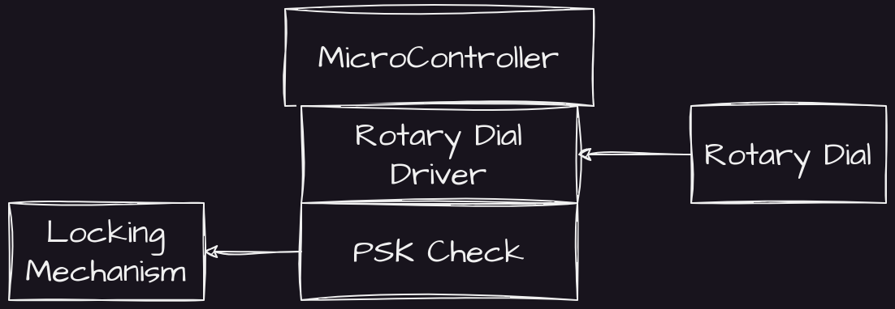
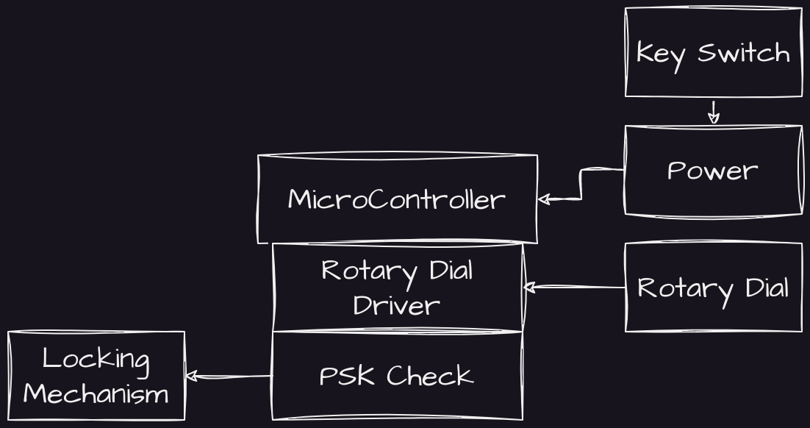
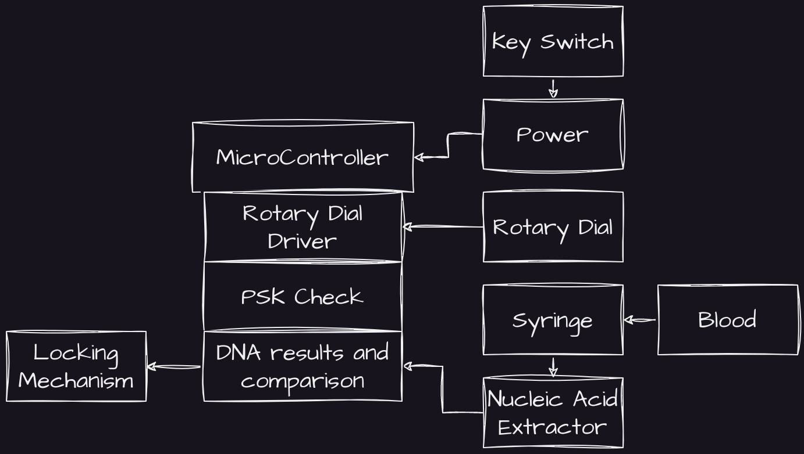
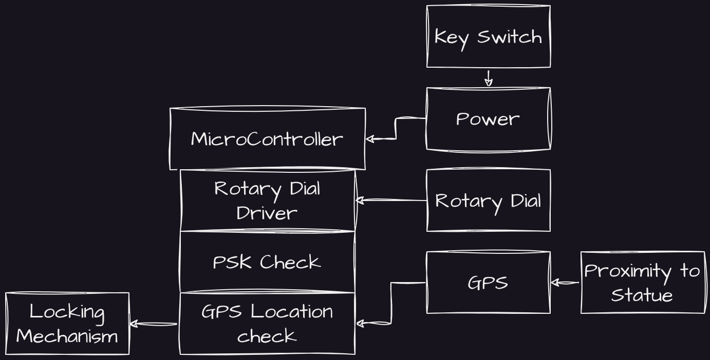

In my apparently never ending quest to engage myself in wasting my own time, I was recently inspired to think about a new project. I wanted to make an access control system. But I didn't want to make a convenient one. Or in fact a useful one at all. I wanted to make the worst, but still completely functional, access control system that I could think of.
Theories of Access Control
Access Control Systems are security mechanisms used to control and restrict access to physical spaces, information, or other valuable assets. These systems can be used in a wide variety of settings, from corporate offices and government buildings to data centers and hospitals.
Access Control Systems typically use one or more of the following mechanisms to control access:
Authentication: This is the process of verifying the identity of a user before granting access. Common authentication methods include passwords, PINs, smart cards, biometric identifiers (such as fingerprints or facial recognition), and two-factor authentication.
Authorization: Once a user's identity has been authenticated, the system must determine whether the user is authorized to access the resource in question. Authorization is typically based on a user's role or job function, and can be managed through permissions or access control lists.
Physical barriers: In addition to authentication and authorization mechanisms, Access Control Systems may also use physical barriers to restrict access. These can include locks, doors, gates, turnstiles, and security cameras.
Monitoring and Logging: Access Control Systems typically include monitoring and logging capabilities, allowing administrators to track access attempts, identify unauthorized access attempts, and generate audit reports.
Access Control Systems can be managed on-premises or through cloud-based services. They are used to protect valuable assets, intellectual property, and sensitive information from theft, damage, or unauthorized access.
The part we're going to focus on is authentication. How can we authenticate the access rights of our user. And more importantly, how we can authenticate the user in the least possible way.
Thoughts on Numerical Keypads
One of the traditional methods of access control is through the use of a PSK, or pre-shared key. These can be found across the world in the form of numerical keypads where a set of digits (either specific to an individual or, perhaps more commonly, a single shared code) is used.
These access codes are typically 4-6 digits long, and have been since their invention. This gives between 10,000 and 1,000,000 potential combinations, which the human mind considers a lot, but technologically speaking is actually extremely weak.
When talking about password strength (because these keypads are just using pre-shared passwords) most reliable sources, as well as the internet comic we're actually going to cite, suggest that length is better than entropy.

So clearly a better approach would be to use a much longer password. For example, 30-50 characters would give between 1e+30 and 1e+50 potential combinations. Which would be much harder for an unscrupulous person to hack. Which is good for an access control system. And wildly inconvenient for the person who has to stand there and enter their 46 digit code. And woe betide whoever happens to forget it.
But can we go further?
Unfortunately, we can.
The rotary phone, also known as the dial phone (and anyone over the age of 35 has begun groaning already on reading this, as they know where we're going next), was introduced in the late 19th century as a replacement for manual telephones. The first rotary dial was invented by Almon Brown Strowger in 1891 and was initially used in commercial settings.
Rotary phones became popular in the 20th century and were used in homes, businesses, and public spaces for several decades. They were gradually replaced by touch-tone phones, which use push buttons to generate electronic tones instead of the mechanical rotary dial.
A rotary dial is a mechanical device that was used on old telephones to place calls. It consists of a circular disk with numbered holes around the edge, a spring-loaded metal finger stop (also known as a "finger wheel"), and a series of metal contacts inside the phone.
To make a call, you would place your finger in the hole corresponding to the desired number and rotate the dial clockwise until it reached the finger stop. As you turned the dial, you'd hear a gentle clicking, but this didn't dial a number. Instead, when you released the dial, the spring-loaded return to position of the dial opened and closed a mechanical gate which sent a number of pulses out from the system.
The number of pulses generated by the dial corresponded to the number dialed +1, with one pulse representing the number 0, two pulses representing the number 1, and so on up to ten pulses for the number 9. These pulses were sent down the phone line and interpreted by the telephone exchange, which would then connect your call to the desired number.
Due to the delay in returning to the starting position, typing numbers using this method was time consuming (and particularly frustrating when making mistakes).
So if we want to make password entry as inconvenient as possible, we clearly need to use a rotary dial as the input method for our 46 digit access code.
Getting a rotary dial.
Rotary dials are actually quite easy to obtain. Simply find your nearest recycling store and browse. In my experience, they often have old phones. Then, much like a lobster, you can crack their shell and pilfer their inner workings. In the model I'm using, the rotary dial was a self contained unit that simply detached using several screws that held it in place.
Hooking up a rotary dial.
Hooking up the rotary dial is as simple as connecting it to the GPIO pins of something like the raspberry pi. You can find a sort of driver for running the rotary dial (as well as the hook-switch, the mechanism that engaged when lifting and lowering the receiver of a rotary phone) here: https://github.com/Effex-D/rotary-phone/blob/master/driver.py
Once you have it hooked in, you can create a short python script for entry of the PSK. Each number will take between 1 and 3 seconds to input, suggesting an average input time of at least a minute and a half for our 46 digit code. How inconvenient!
Current Status
So here we have the beginnings of it. The world's least convenient access control system.

But right now, it looks far too convenient. I want to add more. For the sake of security, of course.
Multi-factor
Let's talk multi-factor authentication.
Multi-factor authentication (MFA) is a security mechanism that requires users to provide two or more different types of authentication credentials to verify their identity before granting access to a system or application.
The three most common types of authentication factors used in MFA are:
Something you know: This is typically a password, PIN, or security question that only the user knows. This we already have covered in our first section.
Something you have: This is typically a physical token, such as a smart card or mobile device, that the user possesses and can use to generate a one-time passcode.
Something you are: This is typically a biometric identifier, such as a fingerprint, facial recognition, or iris scan, that uniquely identifies the user.
By requiring multiple authentication factors, MFA helps to increase the security of a system or application by making it more difficult for unauthorized users to gain access. Even if an attacker manages to obtain one authentication factor, such as a user's password, they would still need to provide the additional factor(s) to gain access.
Something we have
This actually turns out to be pretty easy. A simple key can act as a part of the MFA process with a keyed-switch, as per the following architecture:
In this way, we simply insert the key as the power function for the micro controller.
But I have to admit, I'm coming up short on ways to make key-based authentication more inconvenient, other than increasing the size of the key to ridiculous proportions. I'll have to muse over it and revisit this later.
Current Status

But can we go further?
Unfortunately, I think we can.
The list of multi-factor is actually pretty clear. Our next property is something you are, and that takes us into the wide world of biometrics.
Biometric security measures use unique physical or behavioral characteristics of an individual to verify their identity and grant access to a system, device, or application.
Common biometric identifiers include:
Fingerprint recognition: This involves scanning and analyzing a person's fingerprints to verify their identity.
Facial recognition: This involves using computer algorithms to analyze and compare an individual's facial features to a known database of faces.
Iris recognition: This involves scanning and analyzing the unique patterns in an individual's iris to verify their identity.
Voice recognition: This involves analyzing and comparing an individual's speech patterns and voice characteristics to verify their identity.
Behavioral biometrics: This involves analyzing and tracking an individual's unique patterns of behavior, such as the way they type on a keyboard or use a mouse, to verify their identity.
Biometric security measures are often used in combination with other security mechanisms, such as passwords or two-factor authentication, to provide an additional layer of security. Biometric data is typically stored in encrypted form to prevent unauthorized access, and systems that use biometric identifiers are subject to strict privacy and data protection regulations.
Unfortunately, these systems are all too commonplace for my access control system. I need something cutting edge, outside the box, and wildly inconvenient for everyone involved.
John Mayer was right. It's Always in the Blood.
Naturally, DNA testing via blood sampling would be the most inconvenient route to biometric security.
During the process, the person performing the unlocking would be required to extract a vial of their own blood and insert it into a slot in the machine. The sample would be spun in a centrifuge and then lysed to destroy the cells, leaving only the purified DNA, which would then be inspected and compared to a local DNA storage, allowing for access.

Unfortunately, with such sampling machines costing in excess of twenty thousand euros, it was deemed slightly out of the "Whatever is in my wallet" budget of this project.
A more practical third property: Physical position.
Access control systems can be applied to many things. A physical location is typical, but an object is also valid. If I apply the current access control system as the locking mechanism for a briefcase, it opens up another possibility.
Most access control systems have an inbuilt, invisible multi-factoral property. The actual, physical location. You cannot open a door without being stood in front of it. This allows various external control methods, such as fences, buildings with walls, etc, to act as a method of access control and validation.
But there's no reason we couldn't apply that principle to a mobile solution.
GPS
GPS stands for Global Positioning System, and it is a satellite-based navigation system that provides location and time information anywhere on or near the Earth's surface.
GPS works by using a network of at least 24 satellites in orbit around the Earth. These satellites constantly transmit signals that are picked up by GPS receivers on the ground. By analyzing the time it takes for the signals to travel from the satellites to the receiver, the GPS receiver can determine its distance from each satellite and use that information to calculate its precise location.
GPS can be used for a wide range of applications, including navigation, surveying, mapping, and geocaching. It is used in a variety of devices, including smartphones, tablets, and dedicated GPS devices.
While GPS is a widely used and reliable technology, it does have some limitations. GPS signals can be blocked or weakened by tall buildings, trees, and other obstacles, and they may not work well in underground or indoor environments. Additionally, GPS signals can be disrupted by solar flares, atmospheric conditions, and other factors, which can affect the accuracy of GPS readings.
Physical location is easy to track, if we just attach a GPS module to our micro control and set the required location. For my purposes, I have chosen that, in order to open the briefcase, the user trying to authenticate must be no more than 4 meters from this random statue:
Our final system
Here we have our final architecture, blood sampling optional.

Now I guess all that is left is to... build this monstrosity. But that's another blog post. For another day.